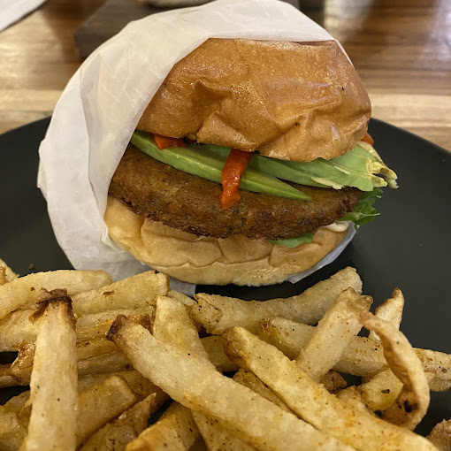
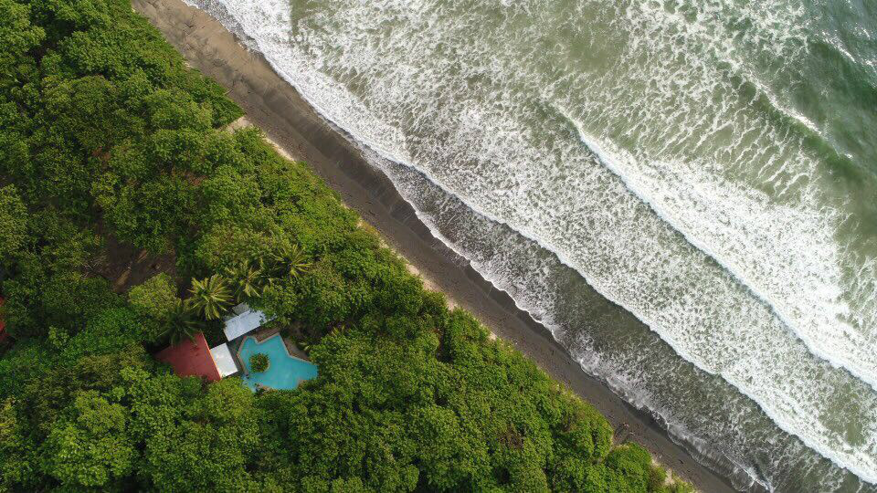

Tamarindo
Costa Rica
Cámaras de surf en vivo en Tamarindo
Conéctate con la ola. Mira las condiciones en tiempo real y elige tu próximo spot.
Aliados y patrocinadores
Colaboradores reales del proyecto y marcas que acompañan la experiencia WavePoint en Tamarindo.
Chop HousePatrocinador activo Capitán SuizoTamarindo
Capitán SuizoTamarindo

Casa de MaderasPalm Beach Red DoorTamarindo
Red DoorTamarindo
 OccidentalLangosta
OccidentalLangosta
Servicios destacados
¿Qué experiencias quieres tener en Tamarindo?


Tours en cuatriciclo — ATV
Recorré los caminos de Guanacaste con operadores locales.
Más información →

Cámaras en vivo
Tres puntos clave: dos cámaras activas y Red Door en preparación.
● En vivo

☾
Cámara en descanso
Disponible de 4:45 a.m. a 6:30 p.m.
Capitán Suizo
Tamarindo
● En vivo
☾
Cámara en descanso
Disponible de 4:45 a.m. a 6:30 p.m.
Casa de Maderas
Palm Beach
Próximamente
Red DoorNueva cámara en camino
Red Door
Tamarindo
Ver colaborador→
WavePoint en Tamarindo
Información útil para elegir mejor tu spot, planear tu sesión y moverte en Tamarindo.
◉
Cámaras reales
Consulta el estado visual de los spots antes de salir.
≈
Condiciones rápidas
Clima, viento, hora local y oleaje estimado en un solo lugar.
⌖
Guía local
Playas, experiencias y puntos útiles para moverte mejor.
✦
Aliados locales
Colaboradores que ayudan a mantener la experiencia activa y útil.
Vive Tamarindo
Más que surf: playas, colaboradores, servicios y experiencias recomendadas.
Explorar guíaDespués del surf
Opciones útiles para comer, guardar recuerdos de la sesión y seguir explorando Tamarindo.
Comida
Chophouse Tamarindo
Burgers, empanadas y cerveza fría después de surfear.
Visitar sitio →
Experiencia en el agua
Buceo
Descubrí Tamarindo bajo el agua con una experiencia de buceo local.
Ver servicio →
Guía local
Explora Tamarindo
Playas, colaboradores, servicios y experiencias cercanas.
Ver guía →